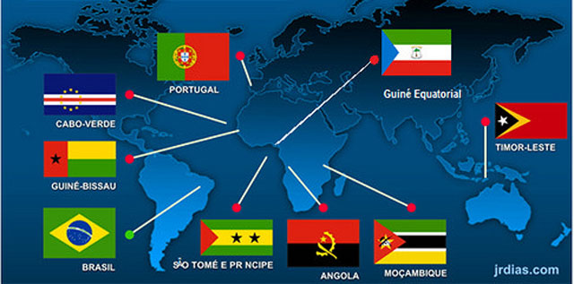

Seja Bem-vindo ao site Países que falam a língua Portuguesa!
O português é uma língua românica originária da região noroeste da Península Ibérica. Hoje em dia, é falada por milhões de pessoas em todo o mundo, principalmente em países que foram colonizados por Portugal durante a era dos descobrimentos. Os principais países onde o português é a língua oficial são Portugal, Brasil, Angola, Moçambique, Cabo Verde, Guiné-Bissau, São Tomé e Príncipe, e Timor-Leste.
Atrações Principais
- No Brasil, o português é a língua nacional e é falado por mais de 200 milhões de pessoas. É o maior país lusófono do mundo em termos de população e área geográfica. No entanto, devido à sua história colonial, o português brasileiro tem algumas diferenças em relação ao português europeu, tanto em termos de vocabulário quanto de pronúncia. Em Portugal, o português é a língua oficial e é falado por cerca de 10 milhões de pessoas. É o país de origem da língua portuguesa e tem uma rica história cultural e literária.
- Além desses países, o português também é falado em comunidades de imigrantes em todo o mundo, especialmente nos Estados Unidos, Canadá, França, e Luxemburgo, entre outros. A língua portuguesa é uma ponte que conecta pessoas de diferentes origens e culturas, enriquecendo o mundo com sua diversidade linguística e cultural.

Descubra a diversidade e a beleza de cada país clicando no menu principal!
Quer ter informações de viagens? Cadastre-se!